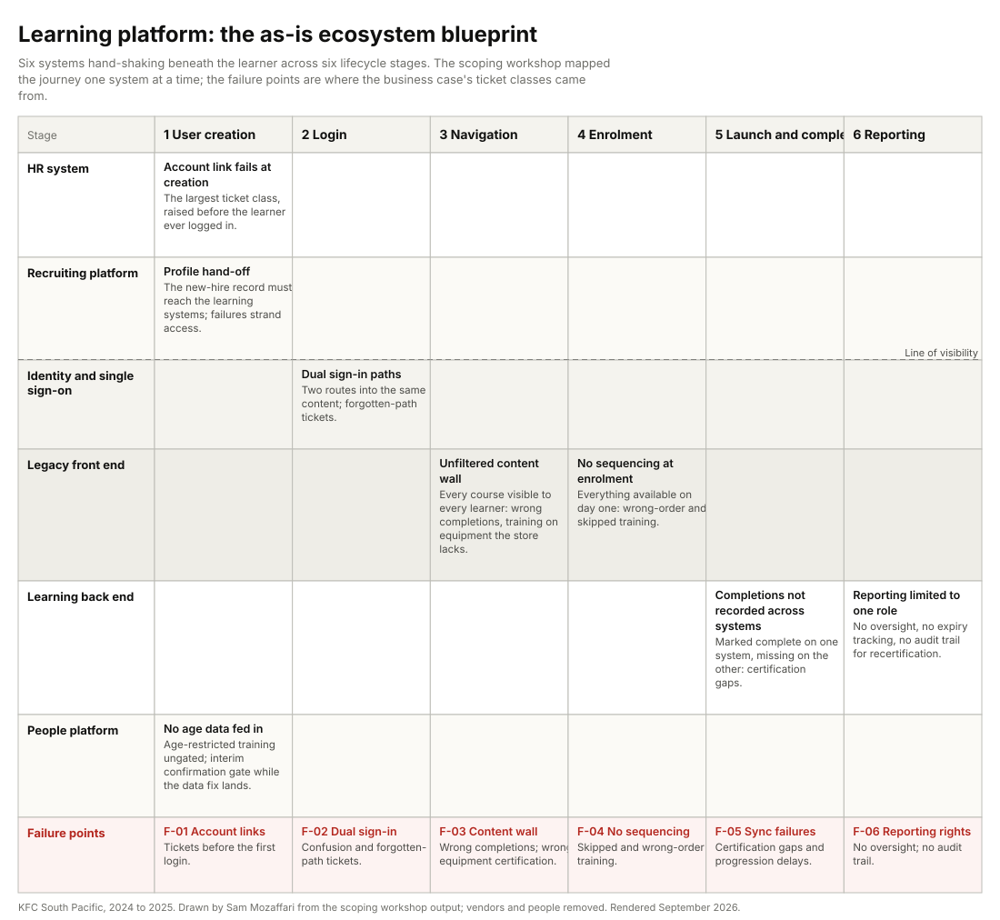

Certification for crew and restaurant managers across several hundred franchised restaurants ran on two learning systems at once: a legacy front end sitting on a paid back-end platform. Two legislative certification lines, food safety and first aid, carry hard expiry dates.
My roleExperience Designer leading the design work, from the business case through the pilot.
CollaboratorsTwo analysts; the vendor's product owner; the global learning and support organisation; franchisee test groups.
ConstraintsNo new licence cost. Age data not fed into any system. Franchisee-specific content and autonomy. A fixed window before the annual recertification cycle, the moment the old platform failed every year.
Key decisionTreat it as an ecosystem problem, not a user-interface problem. Rebuild the learning experience as linear, role-based journeys with gates, and prove them in a sandbox and a two-market pilot before the network-wide call.
StatusBusiness case funded; scoping workshop, learning architecture, gated journeys and dashboard specification delivered; sandbox acceptance testing and a two-market pilot run. The network-wide rollout decision and the data-level age fix sat with the business and the vendor.
{kind=link}

The problem
A new hire saw every course the network owned on day one: station training they were not yet certified for, equipment training for machines their restaurant did not have, age-restricted content they should not have been able to touch. Completions could not be trusted, because training marked complete on one system failed to land on the other. A certification badge, once awarded, could never be revoked, so there was no audit trail for recertification after an incident and no expiry tracking for the legislative certifications. Support tickets were the visible price. The invisible price was regulatory.
The surface ask was to replace the legacy platform. The real problem was the architecture underneath it: six systems hand-shaking beneath the learner, with the failures happening in the hand-shakes. The largest class of ticket was raised before the learner had ever logged in, when the HR account link failed at creation.
The learning platform was a safety system wearing a training system's clothes. Wrong-equipment certification and ungated age-restricted content are liability, not inconvenience.
What I did
- Business case from support data. Pulled the ticketing export for the legacy platform, classified the tickets, and modelled the support hours and cost they consumed. The model was built to understate: every exclusion (manager time chasing tickets, escalation effort, multi-issue tickets counted once) pushed the true burden higher, never lower, so the figure survived challenge at the funding gate.
- A compliance-risk register. Six rows that made this a safety project rather than an upgrade: irreversible badges, no audit trail, no expiry tracking, wrong-equipment certification, reporting restricted to one person per restaurant, dual-system sync failures. Two more registers completed the case: the capabilities lost in the last migration, and the capabilities a leading learning experience needed.
- A full-day scoping workshop. The learner's journey mapped one system at a time across all six systems, with the vendor's product owner in the room so feasibility was agreed before the design depended on it.
- Learning architecture and journey specifications. Linear, role-based journeys with lock sequencing, an interim age gate, prerequisite badges and a dashboard specification. The course catalogue consolidated from a wall of content into role paths across two markets.
- Sandbox and acceptance testing. Production learning experiences copied into a sandbox, the architecture built, user testing with the global team, and franchisee test groups validating cross-portal completion marking, the failure the legacy setup could not fix.
- A two-market pilot with a short agree-scale survey and the ticket queue watched for anything raised against the new platform, designed to give the business the evidence for a network-wide decision.
What the research found
The failure was in the hand-shakes. Account links failing at creation, two sign-in paths into the same content, completions lost between systems. No single screen caused the tickets; the seams did.
Everything on day one is the same as nothing. An unfiltered content wall produced wrong completions, wrong-order training and training on equipment the restaurant did not have. Sequencing and assignment, not navigation, were the design.
Certification needs a lifecycle. Badges that could not be revoked, expiry that was not tracked and reporting held by one person per restaurant meant nobody could prove who was certified on what.
The economics were unusually clean. The back-end licence was already paid, so the business case was purely a support-burden and compliance-risk release.
The pilot survey was not unanimous. Respondents agreed they could complete training without asking a manager what to do next; a minority disagreed that they could find all their required training. That item was logged as the outstanding fix for rollout rather than smoothed over.
Three decisions
Frame it as an ecosystem replacement, not a front-end redesign
Evidence. The ticket classes mapped to system seams, not screens. The legacy front end was a door onto an uncontrolled warehouse.
Alternative considered. A refreshed user interface on the existing dual setup. Rejected: it would have left every sync failure and every ungated course in place.
What we did. One platform, one data source, one sign-in, with every connected system given its own lane in the blueprint so the seams became design objects.
Gate the journey, and label the interim gates as interim
Evidence. Age data was not fed into any system and the data-level fix could not wait for this release. Equipment lists per restaurant did not exist as data.
Alternative considered. Wait for the data fixes before launching gates. Rejected: the recertification window would have passed with the old failures intact.
What we did. A self-confirmation age gate and a simplified equipment selection at launch, both labelled interim in the specification, with the permanent fix (a live equipment registry and age data from the people platform) on the roadmap. Prerequisite badges enforced; revocation and an audit trail designed.
Pilot in two markets before the network-wide decision
Evidence. Franchisee groups own their restaurants and their content; a centrally imposed platform still had to be sold, not dictated.
Alternative considered. Network-wide launch before the recertification cycle. Rejected: one failed cycle on a new platform would have ended the programme.
What we did. A two-market pilot with an agree-scale survey and the ticket queue as the measures, so the rollout decision could be made on evidence the franchisees could see.
What was delivered

The onboarding path as it was specified, with its gates. The note at the end is the one that mattered most in review: interim gates are named as interim so nobody mistakes a workaround for the design.
focus_area: onboarding_path
audience: new_crew
sequence:
- induction # locked until: role assigned
- induction_day2 # locked until: induction + 24h
- station_training: front # locked until: induction_day2
- station_training: kitchen # locked until: induction_day2
- age_restricted_training # gate: learner confirms minimum age (interim)
- equipment_certification # locked until: fundamentals complete
prerequisite_badges:
- open_procedures_cert # required before supervisor-trained badge
progressive_disclosure:
show_only_assigned: true
due_overdue_indicators: true
mandatory_asterisk: true
show_completed_toggle: true
note: interim gates (age confirmation, simplified equipment selection) are
labelled interim; the permanent fix is a live equipment registry and
age data from the people platform.
| Risk in the legacy setup | What the legacy platform did | What the design does |
|---|---|---|
| Irreversible badges | A certification badge, once awarded, could never be revoked | Revocation with an audit trail |
| No audit trail | No trace of post-incident recertification | Recertification recorded against the incident |
| No expiry tracking | Food safety and first aid certifications not tracked to expiry | Expiry on the certification record; due and overdue surfaced to the learner and manager |
| Wrong-equipment certification | Staff certified on equipment the restaurant does not have | Equipment selection at launch; live equipment registry as the permanent fix |
| Restricted reporting | Advanced reporting limited to one person per restaurant | Manager and franchisee reporting rights by role |
| Dual-system sync failures | Completions not recorded consistently between the two systems | One platform, one record; cross-portal marking tested with franchisee groups |
Also delivered: the business case with its cost model and three registers, the six-system as-is blueprint below, the learning architecture, the journey specifications with gates, the dashboard specification, the badge definition, the sandbox build with acceptance results, and the pilot design with its survey instrument.
| Stage / lane | User creation | Login | Navigation | Enrolment | Launch & completion | Reporting |
|---|---|---|---|---|---|---|
| HR system | Account link fails at creationThe largest ticket class: raised before the learner ever logged in. | , | , | , | , | , |
| Recruiting platform | Profile hand-offThe new-hire record must reach the learning systems; failures strand access. | , | , | , | , | , |
| Identity / single sign-on | , | Dual sign-in pathsTwo routes into the same content: forgotten-path tickets and support load. | , | , | , | , |
| Legacy front-end | , | , | Unfiltered content wallEvery course visible to every learner: wrong completions, training on equipment the store lacks. | No sequencing at enrolmentEverything available day one: wrong-order and skipped training. | , | , |
| Learning back-end | , | , | , | , | Completions not recorded across systemsMarked complete on one system, missing on the other: certification gaps, re-completions. | Reporting limited to one roleNo oversight, no expiry tracking, no audit trail for post-incident recertification. |
| People platform | No age data fed inAge-restricted training ungated: interim confirmation gate while the data fix lands. | , | , | , | , | , |
| Failure points | F-01 Account linksTickets before the first login: the largest failure class. | F-02 Dual sign-inConfusion; forgotten-path tickets. | F-03 Content wallWrong completions; wrong-equipment certification. | F-04 No sequencingSkipped and wrong-order training. | F-05 Sync failuresCertification gaps and progression delays. | F-06 Reporting rightsNo oversight; no audit trail. |
Working files, anonymised: the business case, the scoping workshop, the pilot report and the proposals.
How it was measured
Every learner certified on the right learning at the right time, provably.
BaselinesThe ticketing export for the legacy platform (tickets per month, escalation share, hours per ticket) and the completion-marking mismatch between the two systems. Self-direction and findability had no baseline; the pilot survey created one.
Pilot measuresTickets raised against the new platform; completions marked complete on the platform of record; agree-scale items on self-direction and findability.
DriversGating correctness (age gates, lock sequencing, prerequisite badges); completion-marking accuracy; journey completion; self-direction.
LaggingSupport tickets; certification integrity; audit readiness; manager time on learning administration; a clean annual recertification cycle.
Held backPilot figures are not published here. The pilot report holds them for the business; the design decisions above stand without them.
The engagement, for a consulting reader
The learning and development function, with the global support organisation as a dependency and franchisee groups as the constituency.
Scope inA single learning platform replacing the dual setup; the course catalogue consolidated into role-based paths across two markets; crew and management certification with compliance gating; the pilot and the rollout recommendation.
Scope outNew licence procurement; the data-level age fix; franchisee-specific content authoring.
Decisions requestedFund the replacement on the support-burden and compliance case; approve the gated architecture with interim gates; run the two-market pilot; decide the network-wide rollout on pilot evidence.
Timeline and gatesAbout twelve months: business case and funding gate; scoping workshop; architecture and journey design signed off with the vendor; sandbox acceptance; pilot; rollout decision, all before the annual recertification cycle.
Risks managedFranchisee resistance (pilot in their markets, their test groups on cross-portal marking); vendor feasibility (product owner in the workshop); recertification window (interim gates rather than waiting for data fixes).